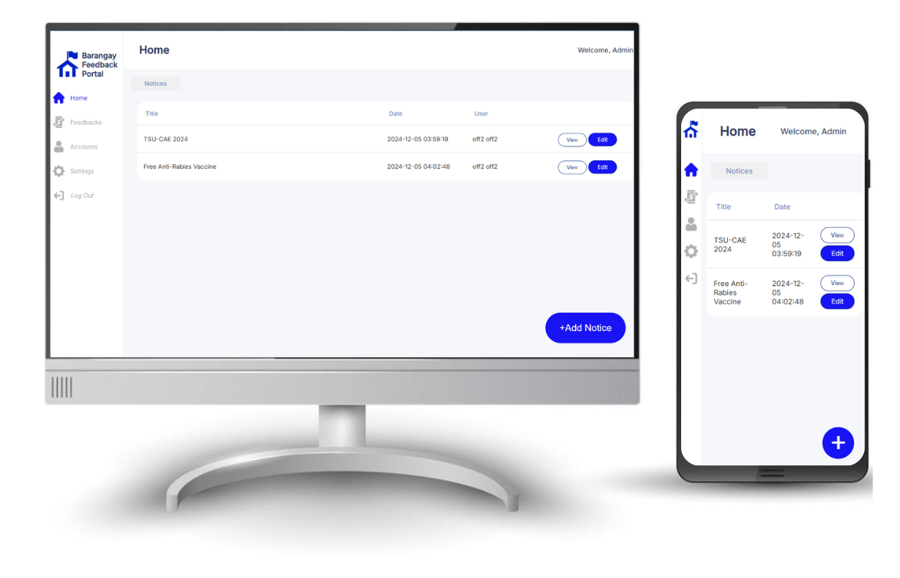
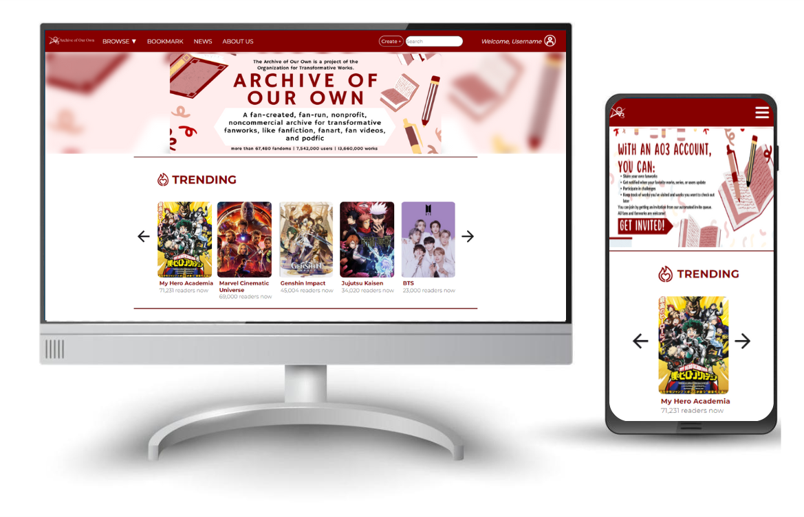
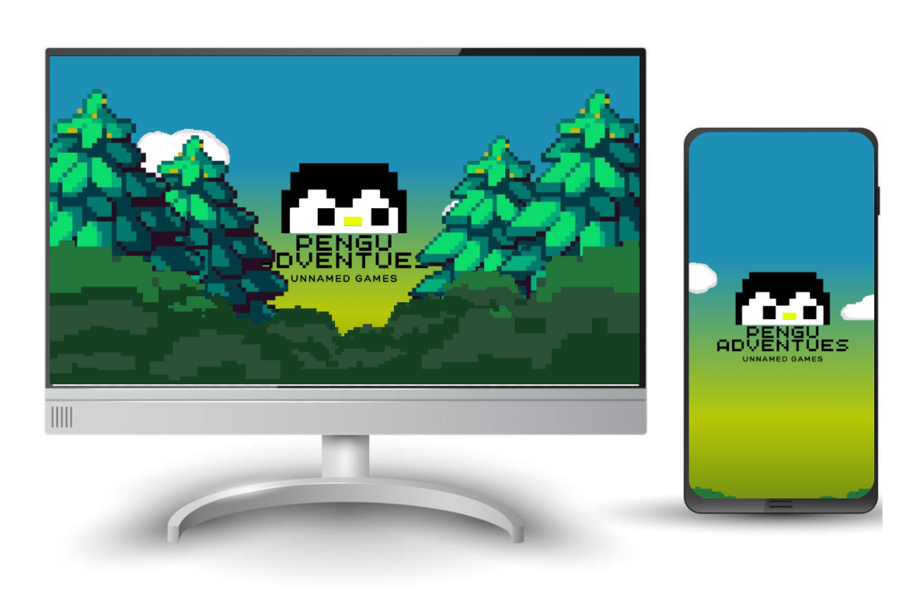
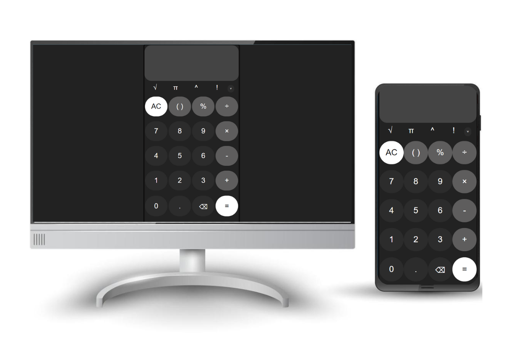
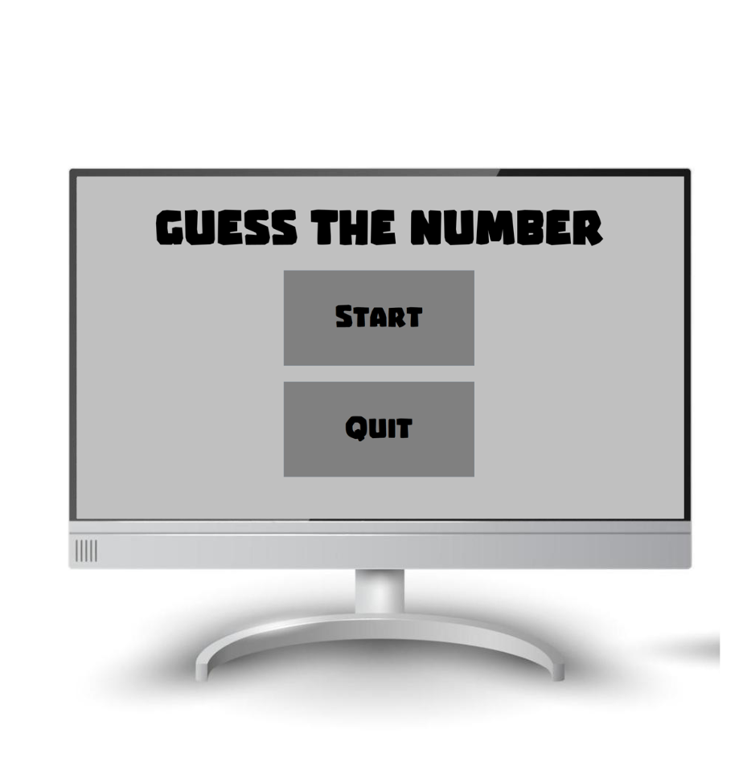
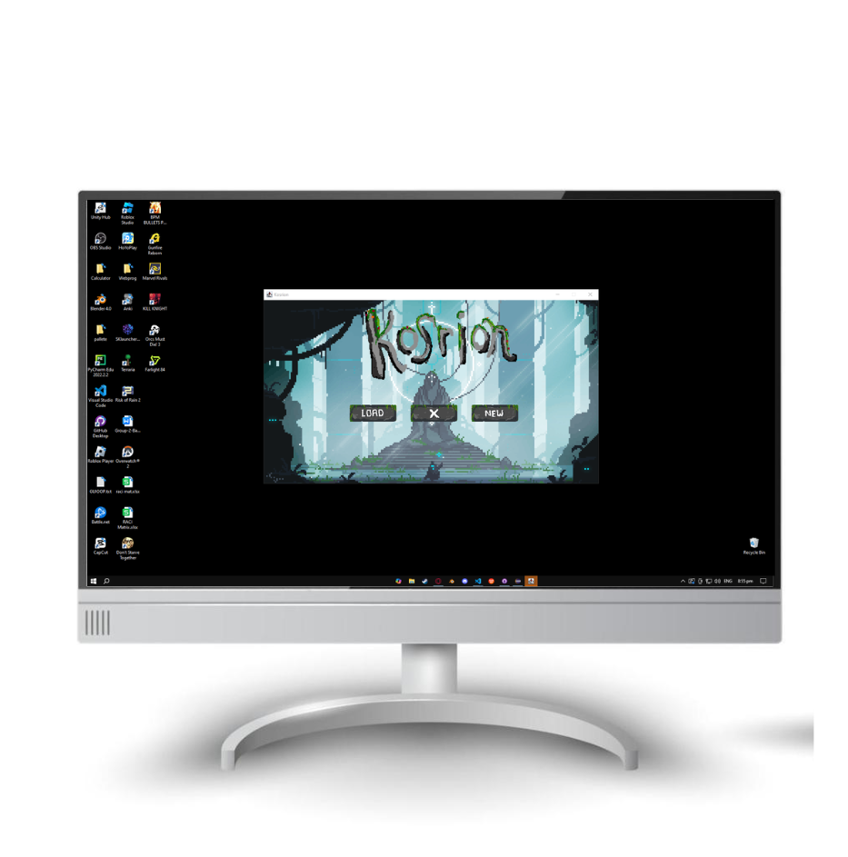
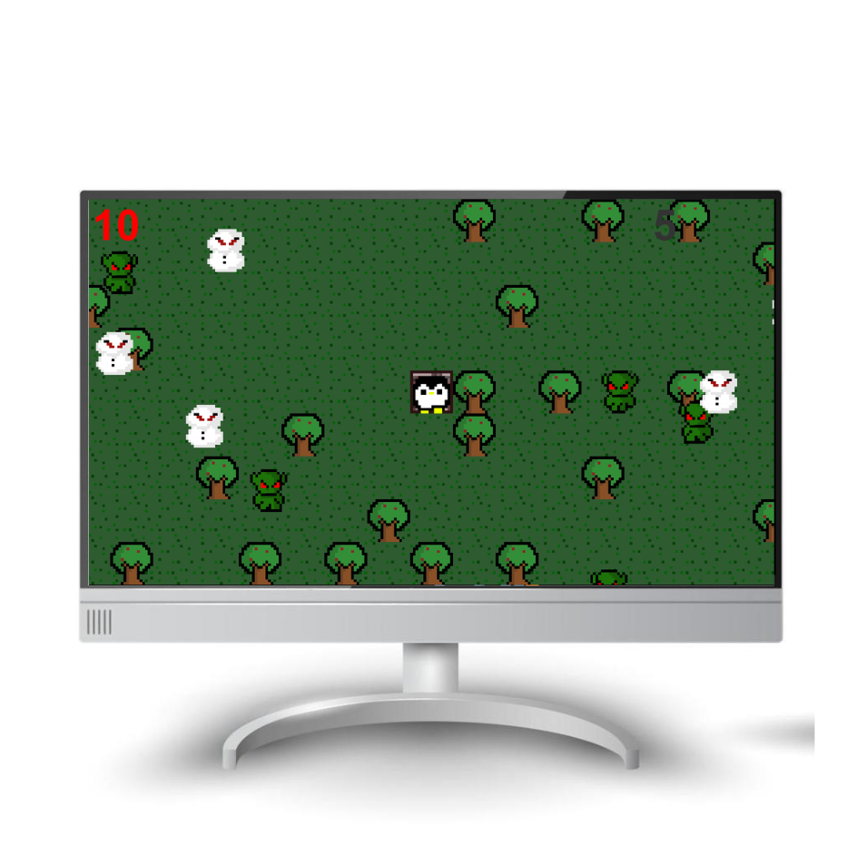

Hey there! I'm Psalm.
I'm a 3rd year college student from Tarlac State University(TSU)
I'm an aspiring full-stack developer with a passion to make projects that I find interesting at the moment.
HOME
Return ←
Skills


Tools


TOOLBOX
Return ←
Barangay Feedback Portal

A Portal for users within a barangay to voice out their complaints, suggestions and requests directly to the barangay hall from the comfort of their home. It offers convinience and a simpler way to communicate without leaving one's home.
scroll ↓
Archive Of Our Own Redesign

A redesign of the website Archive of our own
(old site here). The redesign features more
images and better UX/UI and better user engagement to better retain user attention and make the site more interesting.
scroll ↓
Game Landing Page

A landing page for a game I created in Java called Bloodsucker Remnants (renamed Pengu Adventures) with smooth scrolling, parallax scrolling, and card type scrolling for better user experience.
scroll ↓
Simple Calculator
A calculator created as a task for the web development internship for CodSoft. Its a simple calculator created with basic JS, HTML, and CSS with basic arithmetic operators.
scroll ↓
Advanced Calculator

A project that is in progress of a calculator with more advanced operators such as square root, sin, cos, tan and other more advanced operators created with vanilla JS, HTML, and CSS.
scroll ↓
Numberle

One of the firsts projects I made with Java. A twist on Wordle but with Numbers! A game where a 5 digit number is generated and the player has to guess the correct numbers with 5 guesses.
scroll ↓
Character Selection

A project I created with some friends. A character selection game created in Java with different characters with stats. The project utilizes encapsulation, inheritance, objects and polymorphism.
scroll ↓
Pengu Adventure
